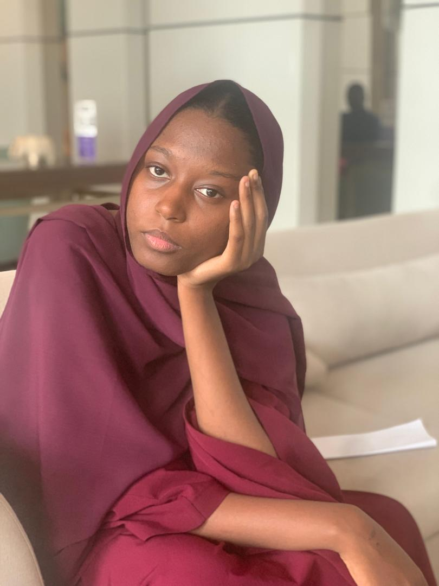

The beginning
Born in Niger and raised with a strong connection to family, community, and the realities around me.
ARTIFICIAL INTELLIGENCE · TECHNOLOGY · IMPACT
I build thoughtful technology with a soft spot for real-world problems, African contexts, and ideas that can make people's lives a little better.

01 / A LITTLE ABOUT ME
I’m an Artificial Intelligence student at African Development University in Niamey, Niger, drawn to the intersection of technology, people, and practical problem-solving.
My journey has taken me from an International Baccalaureate background into AI, software development, competitions, student leadership, community work, and projects inspired by problems I see around me.
I especially enjoy turning an idea into something tangible: a prototype, an app, a model, a community initiative, or simply a better way of thinking about a problem.
02 / MY JOURNEY
Every chapter added something: curiosity, technical depth, confidence, perspective, or a reason to keep building.
Born in Niger and raised with a strong connection to family, community, and the realities around me.
Completed the International Baccalaureate and Nigerien Baccalauréat, with subjects including Economics, Mathematics AI, History, Biology, French and English.
Started a Bachelor's in Artificial Intelligence at African Development University, building foundations in programming, data, AI and software development.
Expanded into projects, hackathons, Kaggle, technical communities, leadership, internships and international opportunities.
Bronze medal at AOAI, selected for IOAI, Youth Ambassador with HundrED × IB, World Bank Youth Summit delegate, and continued project building.
Finish the Bachelor's and pursue a Master's path in Artificial Intelligence, Machine Learning or Data Science.
03 / THINGS I'VE BUILT
A selection of experiments, applications and ideas — some polished, some still evolving. Project pages connect the story to the technical work behind it.
A technology project focused on accessibility and practical digital support. Built with a modern web stack and deployed online.
PAUSE · QUESTION · VERIFY
A concept for helping people develop the reflex to pause, question and verify information in an era of AI-generated and manipulated media.
An exploration of language detection across Hausa, Zarma, French and English — motivated by multilingual realities in the Sahel.
A health-oriented concept exploring how digital tools can improve access, organization and usability of information.
A civic technology project exploring how digital experiences can help people engage with civic information and ideas.
A project inspired by local culture, food and digital creativity, using technology to tell a distinctly Nigerien story.
A regional concept built around the context, needs and possibilities of the Sahel.
An educational concept exploring reading, resources and access through a local lens.
04 / LITTLE WINS
COMPETITION
AOAI · representing Niger
SELECTION
Selected for the International Olympiad in AI
HACKATHON
Hackathon participation
KAGGLE
Classification competition
LEADERSHIP
Youth Leadership Program · cohort president
05 / EXPERIENCE
The places where I learned to work with people, take responsibility, solve practical problems and turn ideas into action.
Hands-on experience within a family agro-transformation company, contributing to communication, digital tools, resource management and AI-oriented prototypes for agriculture. This experience is where technology meets an environment I know personally.
Started as an Event Planner and grew into a Co-lead role, helping organize student technology activities, coordinate community initiatives and contribute to the ADU tech ecosystem.
Served as President of my Cohort 5, taking responsibility for coordination, communication and representing the cohort — an experience that strengthened my confidence in leading peers and creating a sense of community.
06 / GLOBAL ENGAGEMENT
I want technology to be more than something I study. I want it to be something I can use to respond to the realities around me.
— Marie07 / MY ACTIVITIES
Every activity now opens into its own chapter — story, role, lessons, photos, evidence and reflections.
Youth Ambassador
Delegate · 2026
Bronze medal · Niger
Selected · eligibility issue
4th place
Breast cancer classification
AI + voice + automation
Volunteering day
Community activity
Learning to communicate ideas
AI, corruption & social issues
08 / COMMUNITY & SERVICE
The people, communities and spaces where I have learned through participation and service.
Participated in a volunteering day with SOS Children’s Village, contributing time to a community-focused initiative.
Participated in school/community event activities and helped contribute to a shared student experience.
Continuously developing my ability to speak, present ideas and communicate confidently alongside my technical work.
Taking responsibility as President of Youth Leadership Program Cohort 5, with a focus on coordination, representation and peer engagement.
14 / LEARNING & CREDENTIALS
13 / MY TAKE
Not a FAQ. A personal archive of opinions — one question at a time, organized by the themes I care about. Open the full archive ↗︎
My take on context, infrastructure, language and building from real needs.
Read my answer ↗︎What Hausa and Zarma taught me about datasets and inclusion.
Read my answer ↗︎Why “building something” is not the same as solving a problem.
Read my answer ↗︎What I am learning through TCC and Youth Leadership.
Read my answer ↗︎Growing without turning every opportunity into an emergency.
Read my answer ↗︎Why an eligibility issue or a failed idea can still move you forward.
Read my answer ↗︎A young builder’s perspective on staying local while thinking globally.
Read my answer ↗︎Why usefulness, trust, accessibility and context should sit beside performance.
Read my answer ↗︎16 / WHAT I BRING
18 / WHAT'S NEXT
Finish my Bachelor's in Artificial Intelligence, deepen my work in machine learning and data, and continue building technology that makes sense for African realities.
19 / LET'S CONNECT
For mentorship, collaboration, projects, opportunities, or simply a good conversation about technology and impact.